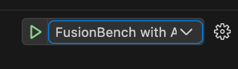
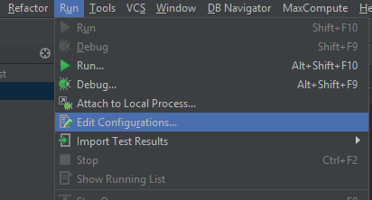
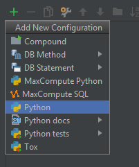
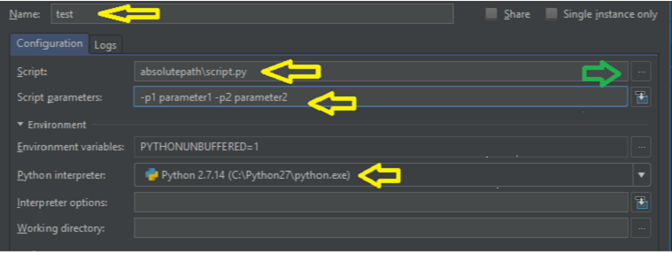

fusion_bench: The Command Line Interface for FusionBench¶
fusion_bench: FusionBench 的命令行界面
fusion_bench is the command line interface for running model fusion benchmarks in the FusionBench project.
It provides a flexible way to configure and execute various fusion algorithms on different model pools and evaluate them across multiple tasks.
fusion_bench是 FusionBench 项目中用于运行模型融合基准测试的命令行界面。 它提供了一种灵活的方式来配置和执行各种融合算法，并在不同的模型池上评估它们在多个任务中的表现。
Details and Options¶
fusion_bench takes a configuration file as input, which specifies the models, fusion method to be used, and the datasets to be evaluated. running fusion_bench is equivalent to running python fusion_bench/scripts/cli.py.
fusion_bench [--config-path CONFIG_PATH] [--config-name CONFIG_NAME] \
OPTION_1=VALUE_1 OPTION_2=VALUE_2 ...
# or equivalently
python fusion_bench/scripts/cli.py [--config-path CONFIG_PATH] [--config-name CONFIG_NAME] \
OPTION_1=VALUE_1 OPTION_2=VALUE_2 ...
fusion_bench has the following options, method, modelpool, and taskpool are the most important ones among these options:
Hydra options¶
- --help, -h: Application's help. Print help message and exit.
- --hydra-help: Hydra's help.
- --version: Show Hydra's version and exit.
- --cfg, -c: Show config instead of running [job|hydra|all]. This is useful for debugging the configuration. However, this just prints plain text configuration without color highlighting or formatting. Or equivalently with the following options:
- --resolve: Used in conjunction with --cfg, resolve config interpolations before printing.
- --package, -p: Config package to show. For example, when you only want to see the configuration for
method. - --info, -i: Print Hydra information [all|config|defaults|defaults-tree|plugins|searchpath]
- --config-path, -cp: Overrides the config_path specified in hydra.main(). The config_path is absolute or relative to the Python file declaring @hydra.main().
By default, the config path is the
configorfusion_bench_configdirectory in the project root. - --config-name, -cn: Overrides the config_name specified in hydra.main(). By default, the config name is
example_configsoconfig/example_config.yamlwill be loaded. You can also specify another config name, for example: - --config-dir, -cd: Adds an additional config dir to the config search path
- --multirun, -m: Run multiple jobs with the configured launcher and sweeper. For more information, see Hydra documentation.
- --experimental-rerun: Rerun a job from a previous config pickle
Shell Completion¶
This is useful for tab completion in the shell. You can install shell completion for Bash, Fish, and Zsh.
- --shell-completion, -sc: Install or Uninstall shell completion:
- Bash - Install:
- Bash - Uninstall:
- Fish - Install:
- Fish - Uninstall:
- Zsh - Install: Zsh is compatible with the Bash shell completion, see the documentation for details.
- Zsh - Uninstall:
Application Options¶
- report_save_path: The path to save the report. If not specified or is
false, the report will not be saved. The report will be saved as a JSON file. Default isfalse. For example, to save the report tooutputs/report.json: - print_config: Whether to print the configuration to the console. If not specified or is
false, the configuration will not be printed. Default istrue. For example, to print the configuration: - dry_run: Perform a dry run.
This will only validate the configuration without running the actual code. Default is
false. For example, to perform a dry run and print the configuration: -
merged_model_save_path: The path to save the merged model. If specified, the merged model will be saved to this path by calling
Note that the behavior ofmodelpool.save_model. For example, to save the merged model tooutputs/merged_model.pt:modelpool.save_modeldepends on the implementation of the model pool. TakeAutoModelForCausalLMPoolas an example, it will save the model to the specified path as a dirctory containing the model configuration and safetensor files, i.e., callingmodel.save_pretrained(merged_model_save_path).Example of
modelpool.save_modelModelPoolis the base class for model pools. Thesave_modelmethod is defined in theModelPoolclass and can be overridden in the derived classes. For example,AutoModelForCausalLMPooloverrides thesave_modelmethod to save the model using thesave_pretrainedmethod of the model. The following is an example of thesave_modelmethod in theModelPoolclass and theAutoModelForCausalLMPoolclass.By passing
merged_model_save_pathto thefusion_benchcommand, only the model and the save path will be passed to themodelpool.save_modelmethod. For example, although theAutoModelForCausalLMPoolclass has asave_modelmethod that can take additional arguments, such aspush_to_hubandsave_tokenizer, these arguments will not be passed to thesave_modelmethod. If you want to pass additional arguments to thesave_modelmethod, you need to implement the logic in method class.fusion_bench.modelpool.CausalLMPool.save_model(model, path, push_to_hub=False, model_dtype=None, save_tokenizer=False, tokenizer_kwargs=None, **kwargs)¶Save the model to the specified path.
Parameters:
-
(model¶PreTrainedModel) –The model to be saved.
-
(path¶str) –The path where the model will be saved.
-
(push_to_hub¶bool, default:False) –Whether to push the model to the Hugging Face Hub. Defaults to False.
-
(save_tokenizer¶bool, default:False) –Whether to save the tokenizer along with the model. Defaults to False.
-
–**kwargs¶Additional keyword arguments passed to the
save_pretrainedmethod.
Source code in
fusion_bench/modelpool/causal_lm/causal_lm.py -
method, modelpool and taskpool options¶
As mentioned earlier, method, modelpool, and taskpool are the most important options in fusion_bench.
The basic usage is as follows:
To override the default configuration, you can specify additional options as follows:
fusion_bench \
method=<METHOD> \
method.<OPTION_1>=<VALUE_1> \
method.<OPTION_1>.<SUBOPTION_1>=<VALUE_1_1> \
method.<OPTION_1>.<SUBOPTION_2>=<VALUE_1_2> \
method.<OPTION_2>=<VALUE_2> \
modelpool=<MODELPOOL> \
...
taskpool=<TASKPOOL> \
...
Paremeter Overrides:
In the above example, <METHOD>, <MODELPOOL>, and <TASKPOOL> are the names of the method, model pool, and task pool, respectively.
<OPTION_1>, <VALUE_1>, <SUBOPTION_1>, <VALUE_1_1>, etc., are the options and values for the method.
In particular, the options for the method are prefixed with method., e.g., method.<OPTION_1>. And the suboptions are prefixed with method.<OPTION_1>., e.g., method.<OPTION_1>.<SUBOPTION_1>.
Basic Examples¶
merge two CLIP models using task arithmetic:
fusion_bench method=task_arithmetic \
modelpool=clip-vit-base-patch32_svhn_and_mnist \
taskpool=clip-vit-base-patch32_svhn_and_mnist
The overall configuration is as follows:
- Configuration for method,
fusion_bench.method.load_algorithm_from_configchecks the 'name' attribute of the configuration and returns an instance of the corresponding algorithm. - Configuration for model pool,
fusion_bench.modelpool.load_modelpool_from_configchecks the 'type' attribute of the configuration and returns an instance of the corresponding model pool. - Configuration for task pool,
fusion_bench.taskpool.load_taskpool_from_configchecks the 'type' attribute of the configuration and returns an instance of the corresponding task pool.
merge multiple CLIP models using simple averaging:
Running in Offline Mode¶
In the offline mode, the model pool will not download the models from the internet. Instead, it will use the models that are already downloaded to the local cache.
To run fusion_bench in offline mode, you can run the following command before running fusion_bench:
Or set the environment variable according to the content of offline_mode.sh.
Debugging and Troubleshooting¶
During algorithm development, you may want to debug the code or inspect the configuration. Here are some tips for debugging and troubleshooting.
Debugging in VSCode¶
Visual Studio Code (VSCode) is a popular code editor that supports debugging Python code with Python extension.
To debug the code using VSCode, you can use the following configuration in your .vscode/launch.json:
- The
modulefield specifies the module to run. In this case, it isfusion_bench.scripts.cli. You can also specify the path to the script directly withprogramfiled, e.g.,"program": ${workspaceFolder}/fusion_bench/scripts/cli.py. - The
argsfield specifies the arguments to pass to the script. You can use${command:pickArgs}to pick the arguments interactively when you run the debugger. Or you can specify the arguments directly, e.g.,"args": ["--config-name", "example_config"].
Once you have the configuration in your launch.json, you can start debugging by selecting the FusionBench with Arguments configuration and pressing F5.

Debugging in PyCharm¶
Debugging in PyCharm with arguments needs to be configured in the Run/Debug Configurations.
- Click on the
Runmenu clickEdit Configurations...
 - Select
+in top right corner and selectPython
 - Provide the name, absolute path of the script (
fusion_bench/scripts/cli.py) or select the script by clicking three dots (green arrow), script parameters, and python interpreter.
